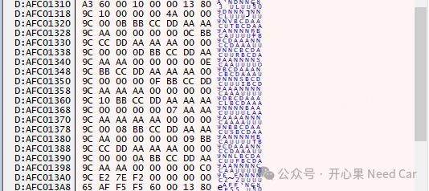
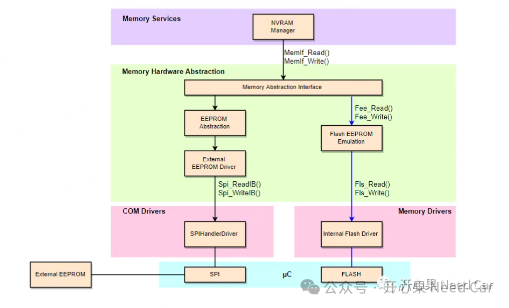
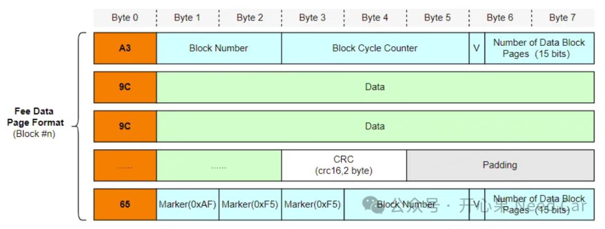
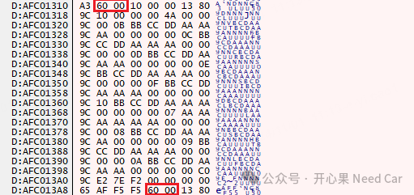
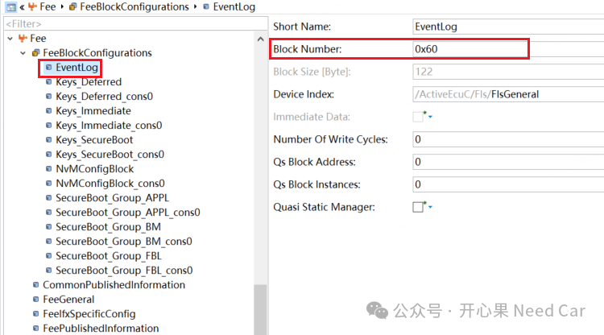
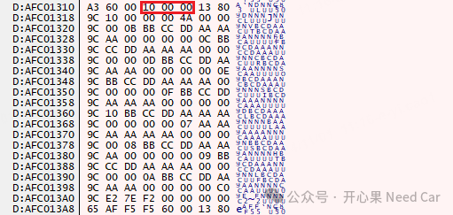
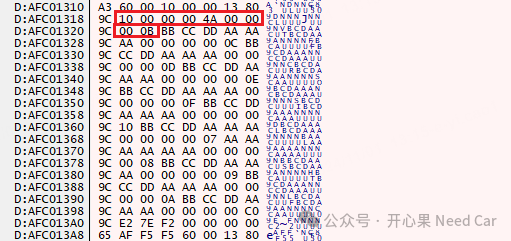
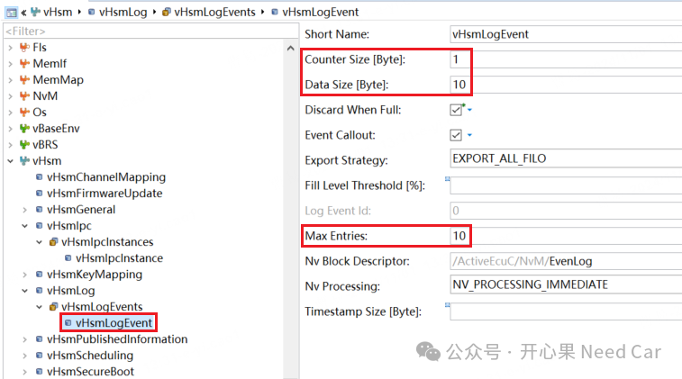
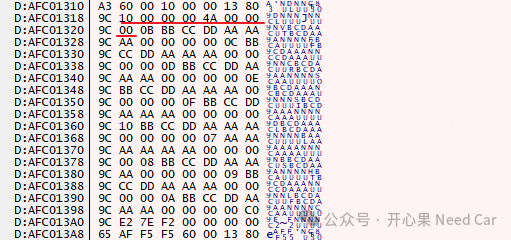

不管是搞软件开发还是测试的小伙伴，对于NvM（Non-Volatile Memory Manager，非易失性内存管理）并不陌生。数据的存储、程序的存储、关键信息的存储都需要依赖NvM，虽然NvM使用场景很多。但是，即使是软件开发的小伙伴，对NvM中存储的信息，有时还是会一知半解，甚至有点困惑，到底是怎样的困惑呢？举例：请求NvM存储一个日志（Event Log），日志数据一共6 bytes，存储的具体内容：0xBB 0xCC 0xDD 0xAA 0xAA 0xAA。存储的信息如下：
理解存储信息之前，我们先了解一下Autosar的存储栈，示意如下：
也就是说，如果存储信息使用端请求NvM进行信息存储时，信息需要经过NvM->MemIf->Fee->Flash Driver->Flash。为了方便信息的管理，其实，信息从最初的请求到最终的存储，并不简单的存储原始数据（raw data），而是通过添加特定的控制信息，以便于存储数据的管理，eg：存储到哪里、擦除了几次、存储了几次等等。存储栈和通信栈、诊断栈一样，信息传导到不同的软件模块层级时，可以添加不同层级的控制信息。
在存储栈中，数据的管理，很大程度上依赖Fee（Flash EEPROM），所以，理解Fee的Block结构，存储的信息就理解了大半。以TC3xx为例，Fee Block结构信息如下所示：

Block Number（2 bytes）表示Fee的块号，如下所示：

Block Number自定义，对应到Fee的配置，如下所示：

Block Cycle Counter（3 bytes）表示当前块被操作了几次，比如：本文存储了16（0x10）次，示意如下：

其中，CRC可以使用CRC16（占用2 bytes）也可以使用CRC32（占用4 bytes）。
（一）块的额外信息解读
对于每个Fee Block信息，对照着如上的Fee Block格式即可理解，但是，为什么还是不能和实际存储的信息对上呢？如果要进一步的理解存储信息，就需要对块的使用方进行分析，如下图：

我们既然是存储6 bytes的数据（0xBB 0xCC 0xDD 0xAA 0xAA 0xAA）。其他信息是什么呢？
准确的理解其他信息，就需要从该Block的使用方着手，首先该Fee Block（Block Number = 0x60）用于安全日志存储（Event Log）。配置信息如下：

解读：该Event事件最多可以记录10个entry，每个entry包含1个counter（占用1 byte）+10 bytes数据（未使用部分填充0），所以，一个entry实际需要占用11 bytes。一个entry如下所示：除此之外，为了便于识别该Block内的安全日志信息，定义了一个数据类型vHsm_Log_MngtType，占用8 bytes，如下所示：typedef struct{ uint32 counter; uint32 offset;}vHsm_Log_MngtType;
- counter：表示该block内的entry一共记录了多少次
- offset：表示最新的entry记录偏移位置，本例每次偏移一个entry距离，即：11 bytes。
提示：本文没有使用时间戳，时间戳可以根据项目情况决定（推荐使用）。

点击下方关注，一起聊聊Autosar/嵌入式，如果需要，联系作者进群，给你更专业的解答